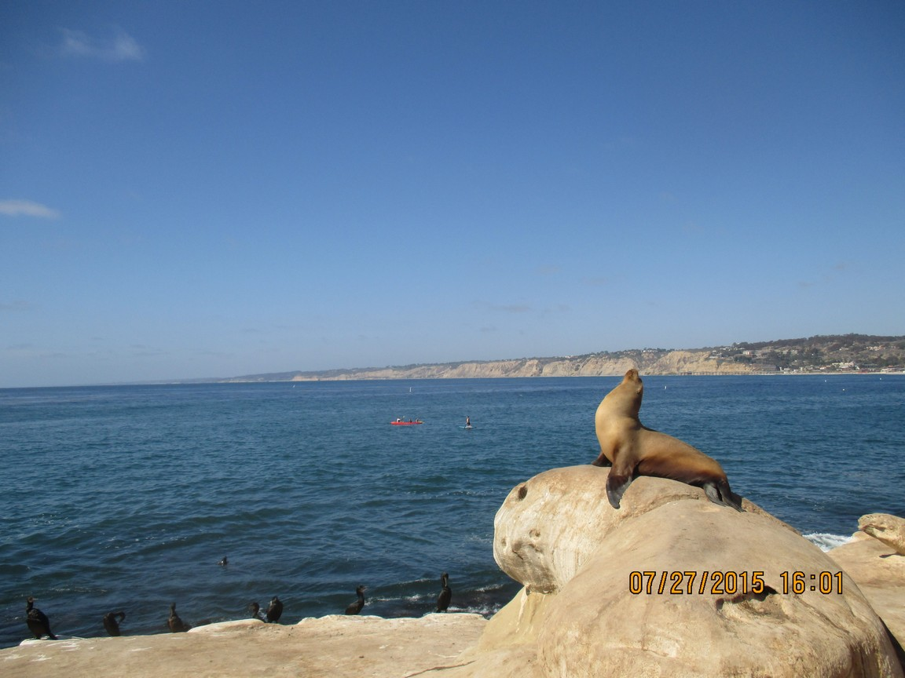

Seagull, you fly across the horizon Into the misty mornin' sun Nobody asks you where you are going Nobody knows where you're from Here is a man asking the question Is this really the end of the world? Seagull, you must have known for a long time The shape of things to come Now you fly, through the sky never asking why And you fly all around 'til somebody, shoots you down, Seagull you fly away And you fly away today And you fly away tomorrow And you fly away, leave me to my sorrow Seagull go and fly Fly to your tomorrow, leave me to my sorrow, fly Read more: Bad Company - Seagull Lyrics | MetroLyrics
A FUN DAY TRIP TO "THE COVE" !

It is important to "Seal the Deal" no matter what I do so I met a cute Sea Lion to deal with ... He/she was very cordial and was indifferent to my presence .
She is a very elegant little Sea Lion who struck a classic pose for me ! .
The entire colony is enjoying an afternoon bask in the sun with their Cormorant friends